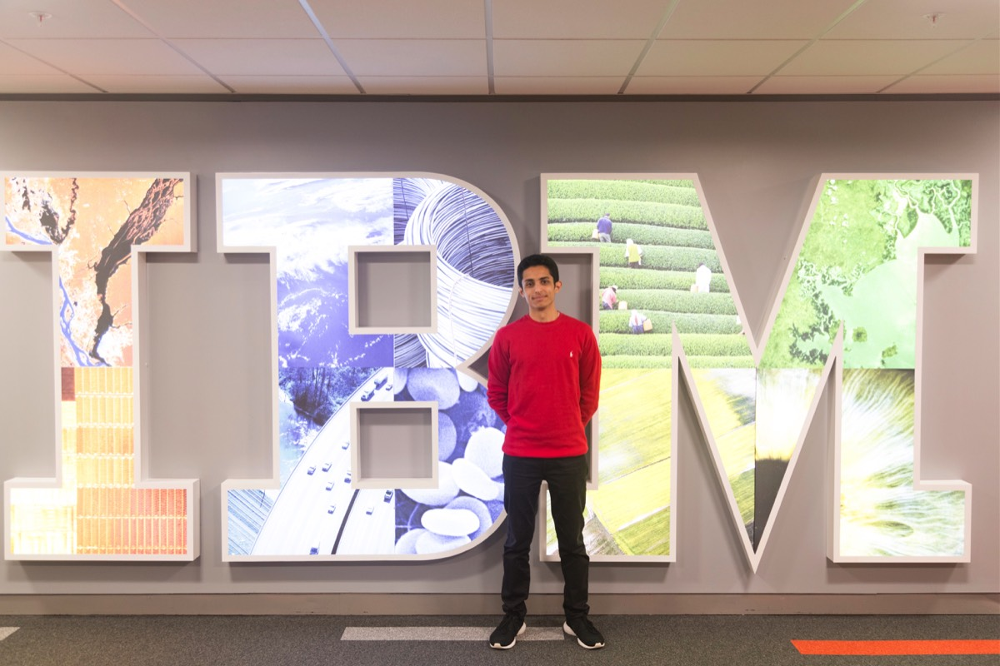
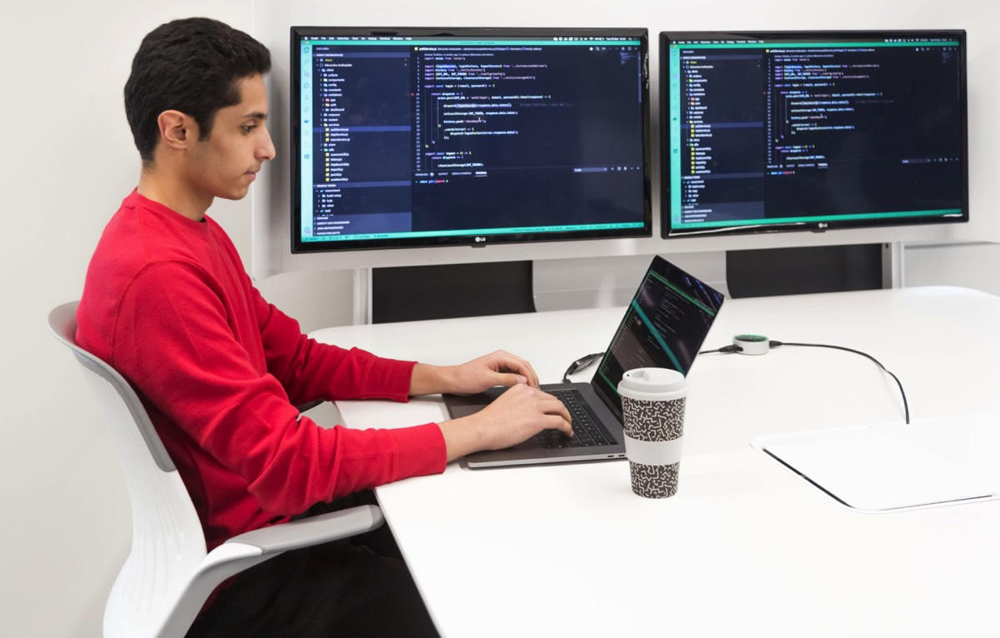
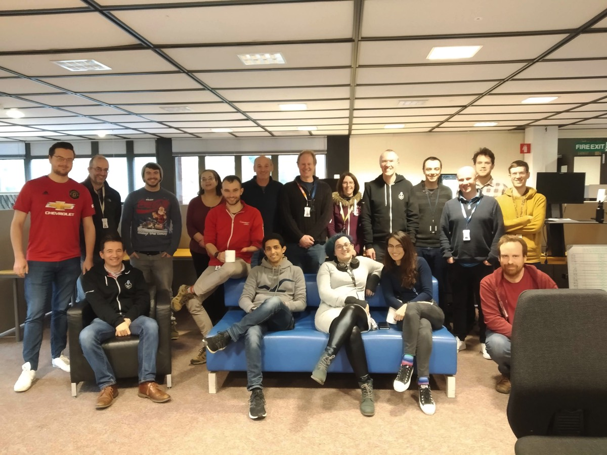
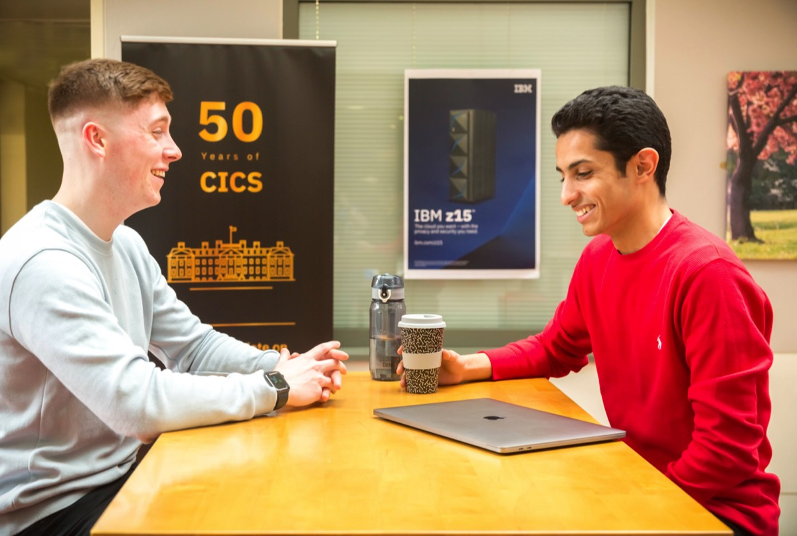

My Time at IBM UK

From when I worked at IBM at Winchester (just outside London, UK)
What does IBM do?
IBM produces and sells computer hardware, middleware and software, and provides hosting and consulting services in areas ranging from mainframe computers to nanotechnology. IBM is also a major research organization.
The company has a diverse set of products and services in various fields, including:
The company has a diverse set of products and services in various fields, including:
- Cloud Computing
- Cognitive computing
- Data and Analytics
- Internet of Things
- IT Infrastructure
- Mobile and Security

What was my role in the company?
My role at IBM was a Dev/Ops software engineer. I was a part of the team responsible for the development, testing and operation of Event Streams on Cloud, which is a Tier 1 IBM Cloud service running on multiple IBM Cloud datacentres around the world.
In a nutshell, the offering is an event-based message streaming service based on Apache Kafka. Using multiple IBM Cloud technologies in the background, Event Streams is trusted by many clients to be a fast, secure and scalable message-streaming platform.
The team operated in a very dynamic manner, which reflects the CI-CD (Continuous Integration-Continuous Deployment) ecosystem we adopted. Since we operated in a DevOps (Development/Operations) way, no member of the team owned any component, and no member was obviously more `senior` than the others. Each member got assigned a pair each week and eventually rotated between the available roles in the DevOps cycle.
At a given point in time, a pair would be either in the ‘Operations’ squad or the ‘Development’ squad.
In a nutshell, the offering is an event-based message streaming service based on Apache Kafka. Using multiple IBM Cloud technologies in the background, Event Streams is trusted by many clients to be a fast, secure and scalable message-streaming platform.
The team operated in a very dynamic manner, which reflects the CI-CD (Continuous Integration-Continuous Deployment) ecosystem we adopted. Since we operated in a DevOps (Development/Operations) way, no member of the team owned any component, and no member was obviously more `senior` than the others. Each member got assigned a pair each week and eventually rotated between the available roles in the DevOps cycle.
At a given point in time, a pair would be either in the ‘Operations’ squad or the ‘Development’ squad.
The Operations Squad
The aim of this squad was to ensure the health and security compliance of the Event Streams deployments, i.e. make sure our clients are happy and provide them with uninterrupted service availability. Engineers in this squad were also responsible for making sure we're meeting certain compliance standards.
- Primary role:
- Secondary role:
The Development Squad
- Feature Development
Each pair in the development squad would be assigned a user story to work on for the sprint (2 weeks). Writing unit tests is an integral part of developing new features for our service. The offering is based on a microservice architecture, with containers deployed on Kubernetes clusters. We wrote code mainly in Go Lang for our microservices, and we push changes through our 3-stage pipeline which delivers code to production daily.
- Integration/End-to-End testing:

What did my days look like?
- We worked in pairs and were assigned a pair and tasks at the start of every week. We started each day with a scrum (stand-up meeting), in which each pair summarised what they did the previous day, what their plan is for that day, and if they are facing any problems. Such problems can be addressed by the squad lead, or by anyone else in the scrum. Scrums usually take under 15 minutes. Our Event Streams team in China would also be with us virtually in the scrum to hand-over any outstanding issues (as their workday ended when ours began).
- We would then start working – I would join my pair at one of the pairing stations, where we share one laptop, but each one has a monitor, keyboard and mouse. This means that we can take turns to ‘drive’ during each coding session. Working in pairs allowed the sharing of knowledge about our complex architecture, and also brought creative value due to having two different perspectives tackling each problem. This phase formed the bulk of the day. If we were in the ‘Operations’ squad, we would be monitoring alerts systems and checking that everything is up and running. If we are in the ‘Development’ squad, we would be coding and developing new features.
- If we reached an issue which we felt requires input from more people, we call for a ‘breakout’. This is a discussion between engineers in the squad in which we talk about the issue and hear from others for suggestions/points of view. Due to the open-plan office we have, breakout invitations are informal, and anyone who is interested can join in.
- Around 4pm, we would hand-over to the Event Streams U.S. team any outstanding issues so that they can pick up where we left off (as their workday would begin when ours was ending).

What I enjoyed most
I really enjoyed the truly agile way of working my team has adopted. We had weekly retrospective sessions in which we reflected about the good and bad about anything in the team. We make constant adjustments in the way we work based on these reflections and hence the team is constantly becoming more productive.
The agile workflow as well allowed a very high-paced development cycle, meaning that our customers got daily updates with code we were just working on a few days beforehand. It is amazing to see your effort take this little time to have an effect. Working agile also involved us getting weekly updates from the team’s Offering Manager, who is charge of the business/client side of our product. Being aware of how we are doing from that perspective brought great value as we got feedback from clients which we could use to make improvements incrementally and iteratively.
The fact that everyone in the team rotated through the different roles created a “shared ownership” culture. We all thoroughly understand our product, and nobody was “in charge” of a specific part of it. This also means that I became in some way involved in all sub-projects running within my team, which is incredible really.
IBM runs a lot of educational workshops and reading groups for different competencies, which anyone is welcome to register for and attend. Managers were very supportive of employees working on improving their skills and so would encourage taking an hour or so to attend such events at work.
The agile workflow as well allowed a very high-paced development cycle, meaning that our customers got daily updates with code we were just working on a few days beforehand. It is amazing to see your effort take this little time to have an effect. Working agile also involved us getting weekly updates from the team’s Offering Manager, who is charge of the business/client side of our product. Being aware of how we are doing from that perspective brought great value as we got feedback from clients which we could use to make improvements incrementally and iteratively.
The fact that everyone in the team rotated through the different roles created a “shared ownership” culture. We all thoroughly understand our product, and nobody was “in charge” of a specific part of it. This also means that I became in some way involved in all sub-projects running within my team, which is incredible really.
IBM runs a lot of educational workshops and reading groups for different competencies, which anyone is welcome to register for and attend. Managers were very supportive of employees working on improving their skills and so would encourage taking an hour or so to attend such events at work.